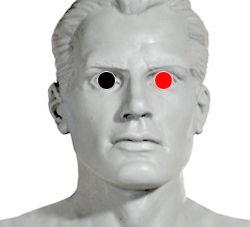

Citomegalovirus
Pares:
ojo - ojo
plexo cervical - plexo cervical*

Generalidades:
Ataca a la médula espinal, y produce verdadera Esclerosis múltiple o Lateral. Es curable hasta que no hay daño medular. Falsa Esclerosis cuando alguna bacteria oprime la médula.
Síntomas: Problemas oculares : Malestares en la retina, Coriorretinitis (deformación de la retina). Infección del Higado y Torch. Retraso mental en el feto (durante el embarazo). Impactar pares: TIBIA Y URETRA
Es una enfermedad de Type autoinmune en la cual el sistema inmunológico ataca al sistema nervioso causando daños en las vainas de mielina que recubren los nervios. Como consecuencia estos no transmiten correctamente los impulsos nerviosos o dejan de trasmitirlos.
Esclerosis Múltiple Falsa:
Para la Esclerosis Múltiple Falsa aplicar el par: plexo cervical=. También revisar pares de meningococo.